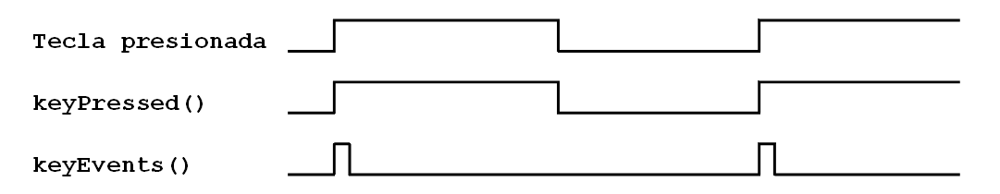

4. Pulsadores: Eventos¶
Objetivos¶
- Leer los eventos asociados a un pulsador.
- Responder a los eventos de los pulsadores.
Eventos relacionados con los pulsadores¶
A la hora de leer un pulsador, se debe distinguir los estados de los eventos.
Un estado se mantiene en el tiempo. Un ejemplo de estado es el valor presionado de un pulsador. Mientras el pulsador está presionado, el estado vale uno. Cuando el pulsador no está presionado, el estado vale cero.
Un evento, por el contrario, solo es verdadero al comenzar un nuevo estado. En el caso anterior, al presionar un pulsador el evento presionado vale uno la primera vez que se lee. A partir de ese momento, siempre vale cero hasta que se vuelva a cumplir la condición de pulsador presionado.
Los eventos son útiles cuando se desea realizar una sola acción al presionar una tecla. En el siguiente gráfico se puede ver la diferencia entre estado y evento.
{kind=link}
La función keyEvents¶
-
int
keyEvents(int keyNum)¶ Esta función devuelve el valor de los eventos que se producen en un pulsador. Los eventos que puede devolver la función son los siguientes:
Evento Significado KEY_PRESSED_TIME1 El pulsador se ha presionado durante 0,02 segundos KEY_PRESSED_TIME2 El pulsador se ha presionado durante 0,5 segundos KEY_PRESSED_TIME3 El pulsador se ha presionado durante 2,0 segundos KEY_RELEASED El pulsador se ha dejado de presionar Estos valores de tiempo son los valores predefinidos después de iniciar la placa y se pueden cambiar en la configuración.
keyNum: número del 1 al 6 que representa al pulsador del que se solicita su valor.
Encender un led al presionar un pulsador cierto tiempo¶
En este ejemplo, un led se encenderá después de que se presione su pulsador durante más de medio segundo
1 2 3 4 5 6 7 8 9 10 11 12 13 14 | // Enciende el led D1 cuando se pulse el pulsador 1 más de medio segundo
#include <Picuino.h>
void setup() {
pio.begin(); // Inicializar el shield Picuino UNO
}
void loop() {
// Si (evento del pulsador 1 es presionado-medio-segundo)
if (pio.keyEvents(1) == KEY_PRESSED_TIME2)
// Enciende el led D1
pio.ledWrite(1, LED_ON);
}
|
El ejemplo puede modificarse con facilidad para que se encienda después de presionar dos segundos.
1 2 3 4 5 6 7 8 9 10 11 12 13 14 | // Enciende el led D1 cuando se presione el pulsador 1 más de dos segundos
#include <Picuino.h>
void setup() {
pio.begin(); // Inicializar el shield Picuino UNO
}
void loop() {
// Si (evento del pulsador 1) es presionado-medio-segundo
if (pio.keyEvents(1) == KEY_PRESSED_TIME3)
// Enciende el led D1
pio.ledWrite(1, LED_ON);
}
|
Múltiples funciones en un pulsador¶
Este ejemplo es un poco más complejo y demuestra la capacidad de los eventos para dar más de un significado a un solo pulsador. Gracias a esta capacidad, un solo pulsador podrá realizar muchas funciones por sí solo.
1 2 3 4 5 6 7 8 9 10 11 12 13 14 15 16 17 18 19 20 21 22 23 24 25 26 27 28 | // Enciende, apaga y parpadea D1 con un solo pulsador
#include <Picuino.h>
void setup() {
pio.begin(); // Inicializar el shield Picuino UNO
}
void loop() {
// Almacenar el evento en una variable
int event = pio.keyEvents(1);
// Si (evento del pulsador 1) es recién-presionado
if (event == KEY_PRESSED_TIME1)
// Apaga el led D1
pio.ledWrite(1, LED_OFF);
// Si (evento del pulsador 1) es presionado-medio-segundo
if (event == KEY_PRESSED_TIME2)
// Parpadea el led D1 rápido
pio.ledBlink(1, 20, 20);
// Si (evento del pulsador 1) es presionado-dos-segundos
if (event == KEY_PRESSED_TIME3)
// Elimina el parpadeo y enciende el led D1
pio.ledBlink(1, 0, 0);
}
|
Ejercicios¶
Programa el código necesario para resolver los siguientes problemas.
El siguiente programa enciende el led D1 al presionar el pulsador D1 y apaga el led D1 al volver a presionar el pulsador 1. Se utiliza una variable para almacenar el estado del led D1. Se pide modificar el programa para que también el led D2 se encienda y apague con el pulsador 2.
1 2 3 4 5 6 7 8 9 10 11 12 13 14 15 16 17 18 19 20
// Enciende y apaga el led D1 con el pulsador 1 #include <Picuino.h> int on_off_1; void setup() { pio.begin(); // Inicializa el shield Picuino UNO on_off_1 = 0; // El led D1 comienza apagado } void loop() { pio.ledWrite(1, on_off_1); // Enciende o apaga el led D1 // Si (evento de pulsador 1 es igual a pulsado) if (pio.keyEvents(1) == KEY_PRESSED_TIME1) { // Cambia el estado de encendido <--> apagado on_off_1 = 1 - on_off_1; } }
El siguiente programa mueve hacia la derecha un led cuando se presiona el pulsador 2. Modificar el programa para que el led se mueva hacia la izquierda al pulsar el pulsador 1.
1 2 3 4 5 6 7 8 9 10 11 12 13 14 15 16 17 18 19 20 21 22 23
// Mueve la luz a izquierda y derecha con los pulsadores 1 y 2 #include <Picuino.h> int led; void setup() { pio.begin(); // Inicializa el shield Picuino UNO led = 1; // Enciende primero el led D1 pio.ledWrite(led, LED_ON); } void loop() { // Si se pulsa la tecla derecha if (pio.keyEvents(KEY_RIGHT) == KEY_PRESSED_TIME1) { pio.ledWrite(led, LED_OFF); // Apaga el led actual led = led + 1; // Mover el led a la derecha if (led > 6) // Si se pasa por la derecha led = 1; // volver al inicio pio.ledWrite(led, LED_ON); // Enciende el nuevo led } }
Modificar el programa anterior para que se encienda el led D1 al presionar el pulsador 6
KEY_BACKdurante dos segundos.